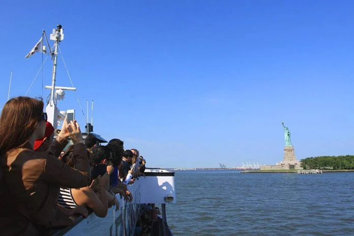
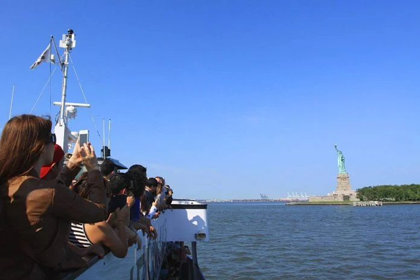
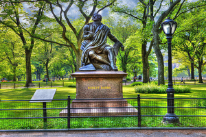

New York
New York City est tout simplement incroyable. Il y a tant de choses à faire, à voir et à goûter que nous avons fait le choix d’y rester dix jours. Notre objectif : vous donnez l’envie d’y rester 10 jours, durée parfaite selon nous pour découvrir NEW YORK !
Les 6 lieux incontournables
La statue de la Liberté
La Liberté éclairant le monde et la liberté
En savoir plus Voir mes photosCentral Park
Central Park est un espace vert américain
En savoir plus Voir mes photosTimes square

Times Square est un quartier de la ville de New York
En savoir plus Voir mes photosGrand central Terminal

Grand Central Terminal est une gare ferroviaire
En savoir plus Voir mes photosCinquième avenue
La Cinquième Avenue est une artère importante
En savoir plus Voir mes photosChinatown
Chinatown est un quartier chinois situé dans le sud
En savoir plus Voir mes photosMon album sur la statue de la liberté
Sachez que c’est la France qui, en signe d’amitié, a offert la Statue de la Liberté aux États-Unis pour célébrer le centenaire de la déclaration d’indépendance américaine. Soyons-en fiers !
 


Mon album sur Central Park
Besoin d’un peu de calme dans cette ville qui ne dort jamais ? Central Park vous étonnera par sa capacité à vous couper de ce bruit perpétuel qui caractérise New York. Ce parc situé au coeur de Manhattan s’étend sur 4 km, entre la 5ème Avenue et Central Park West. Surnommé le poumon vert de New York, il est un véritable havre de paix… truffé d’histoires cachées et de lieux à découvrir !
|  | ||
Mon album de Times Square
Times Square, à New York, est probablement la place la plus connue à travers le monde. Times Square est considéré comme l’attraction touristique la plus visitée au monde. Lorsque vous visitez Times Square à Midtown Manhattan, il est facile de comprendre pourquoi : des touristes venus du monde entier viennent s’émerveiller devant les néons des panneaux d’affichages, voir une comédie musicale célèbre, faire du shopping dans le quartier et s’imprégner de l’ambiance unique de Times Square.
Mon album de Grand Central terminal
Même si vous n’avez jamais mis les pieds à New York, il y a de fortes chances pour que vous ayez déjà entendu parler de Grand Central. La gare Grand Central est un de ces lieux new yorkais mythiques que l’on aperçoit dans quantité de films, à tel point qu’on finirait presque par trouver l’endroit familier. Pourtant, Grand Central Terminal n’est pas un lieux touristique à proprement parler puisqu’il s’agit tout bêtement … d’une gare. Mais quelle gare !
Mon album de la Cinqième avenue
S'il y a bien une rue célèbre à New York, il s'agit de la Cinquième Avenue, également appelée l'Avenue des Millionnaires. Comme toutes les avenues de la ville, cette rue traverse New York du nord au sud.
Mon album photo Chinatown
Je vous propose de vous promener dans l’un des quartiers les plus étonnants de New York : le fameux Chinatown ! Ce quartier situé au sud de Manhattan a la particularité de nous projeter dans un environnement tout à fait typique des pays asiatiques : panneaux, enseignes, magasins, restaurants, odeurs, tout est une véritable invitation au dépaysement ! Le quartier abrite en effet l’une des plus grosses communautés chinoises d’Amérique du Nord. En plein New York, il est donc possible de s’échapper quelques heures dans un monde 100% asiatique qui promet son lot de dépaysement !